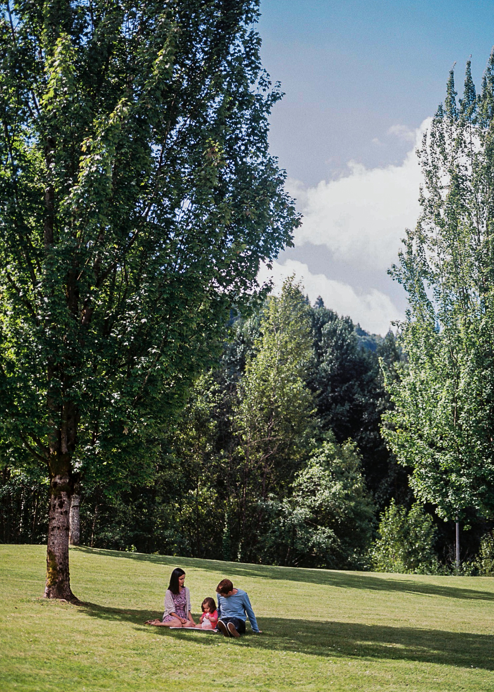

Ben Naismith
PhD Linguistics Candidate at the University of Pittsburgh
Profile
 I am a fifth-year Linguistics PhD candidate at the University of Pittsburgh as well as an
experienced professional in the field of Teaching English as a Second or Other Language (TESOL).
My research interests include second language acquisition, TESOL, corpus linguistics, lexical proficiency,
and language assessment. As a lead member of the Pitt
English Language Institute (ELI) Data Mining Group, I investigate aspects of lexical development
by applying computational methods to the Pitt ELI Corpus (PELIC).
I am a fifth-year Linguistics PhD candidate at the University of Pittsburgh as well as an
experienced professional in the field of Teaching English as a Second or Other Language (TESOL).
My research interests include second language acquisition, TESOL, corpus linguistics, lexical proficiency,
and language assessment. As a lead member of the Pitt
English Language Institute (ELI) Data Mining Group, I investigate aspects of lexical development
by applying computational methods to the Pitt ELI Corpus (PELIC).
Ultimately, my professional goal is to help bridge the gap between academics and classroom teachers in order
to meaningfully and positively impact language teaching and learning. Currently, I am completing my dissertation and
seeking a position as an assistant professor for the Fall of 2022.
Curriculum Vitae Preview
Click here to download the PDF.
Recent projects
The following are current or recent projects which are publicly available as publications, conference presentations, or online repositories. Click the images for more information about the projects.
Public introduction of PELIC, a learner corpus.

Investigation of various aspects of lexical depth
in learners' written essays in PELIC.
Public GitHub repository available online, slides available upon request.
Corpus study of factors affecting affixation choices.
Posters from an early version of the paper and current
published paper available online.

Creation of an NLP 'extension layer' for the
Bob Nelkin Collection of ACC-PARC Records as part of the larger
Collections as Data at Pitt project.
About Me

Originally from Canada, I have spent most of my adult life living and teaching in other countries including the UK, Thailand, Costa Rica, the UAE, and now the USA. Outside of school and work, I can almost always be found spending time with my small family - my wife, daughter, and our dogs - as we explore the world together.
Updates (2021)
| September 2021: | Awarded a Duolingo Research Grant |
| August 2021: | Awarded the Andrew Mellon Predoctoral Fellowship |
| July 2021: | Natural Language Processing researcher for the Pitt Digital Scholarship Services |
| June 2021: | Natural Language Processing researcher for the Pitt Teaching and Learning Center |
| June 2021: | Publication of article in Language Teaching Research on mid-frequency lexis |
| June 2021: | Publication of article in System on multiword sequences in learner speech |
| January 2021: | Publication of article in Canadian Journal of Applied Linguistics on morphological productivity |
| January 2021: | Continuing appointment as Graduate Student Researcher and Teaching Fellow, Department of Linguistics |
| January 2021: | Awarded Humanities Engage Immersive Fellowship by the University of Pittsburgh |
Contact
If you would like to get in touch, please contact me in any of the following ways. I am always interested in new opportunities for collaboration or work.
- Email: bnaismith@pitt.edu
- Twitter: @BenNaismithELT
- Facebook: www.facebook.com/BenNaismithELT
- LinkedIn: www.linkedin.com/in/bennaismithelt
- GitHub: github.com/bnaismith / github.com/ELI-Data-Mining-Group
- ResearchGate: www.researchgate.net/profile/Ben_Naismith
- University of Pittsburgh: www.linguistics.pitt.edu/people/ben-naismith